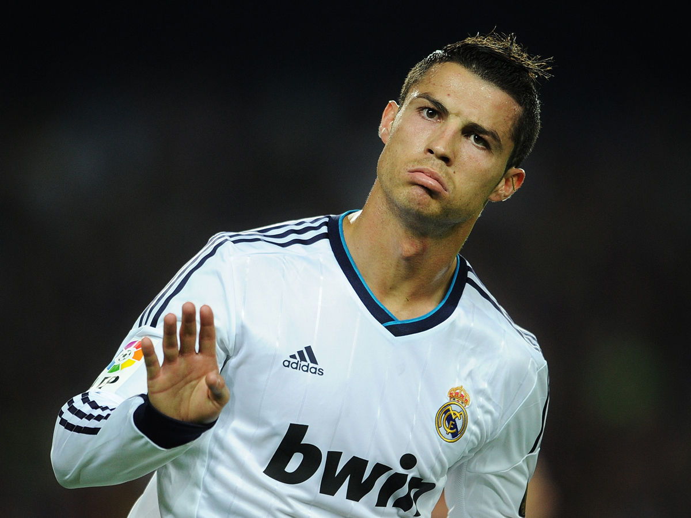

X
Cristiano Ronaldo
Cristiano Ronaldo dos Santos Aveiro (Funchal, Madeira, Portugal, 5 de febrero de 1985), mejor conocido como Cristiano Ronaldo (AFI: kɾiʃˈtiɐnu ʁuˈnaɫdu), es un futbolista portugués que juega como extremo en el Real Madrid Club de Fútbol, de la Primera División de España.